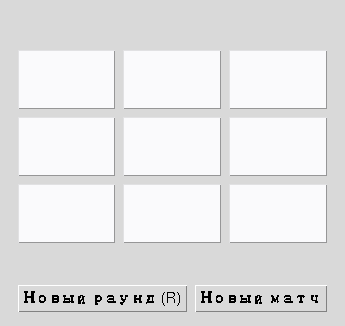

Глава 17 · Раунды и матчи
Счёт матчей
Партия заканчивается — матч продолжается: счёт живёт дольше одного раунда.
Счёт живёт в GameState, а не в случайной отдельной переменной

schet.py
if winner == "X":
state.score_x += 1
else:
state.score_o += 1
self.score_var.set(f"X: {state.score_x} | O: {state.score_o} | Ничьи: {state.draws}")Осторожно с редким символом-разделителем в Tkinter-метках
Красивый символ вроде типографской точки «•» иногда рендерится испорченным набором символов в headless-окружениях с ограниченным набором шрифтов — как выяснилось при подготовке скриншотов этой самой главы. Простой ASCII-разделитель
" | " работает предсказуемо везде.Счёт увеличивается ровно один раз за партию — внутри attempt_move(),
сразу после того как найден победитель или зафиксирована ничья, а не где-то ещё.
Практика: учёт счёта матча
Автоматическая проверка — чистые функции обновления счёта по результату раунда